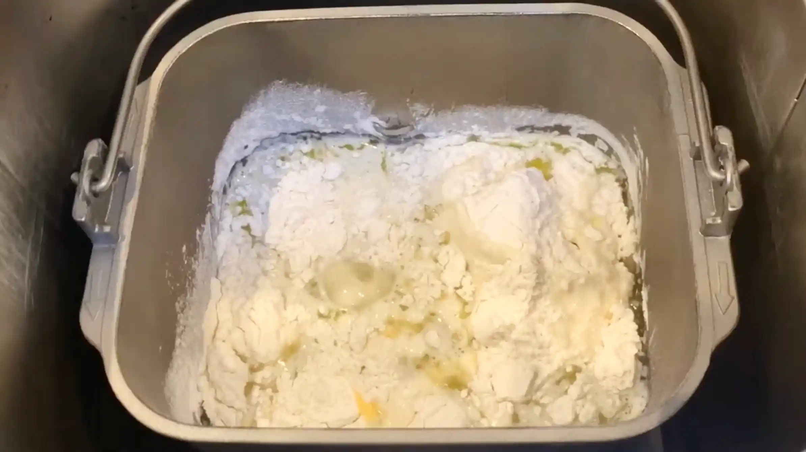
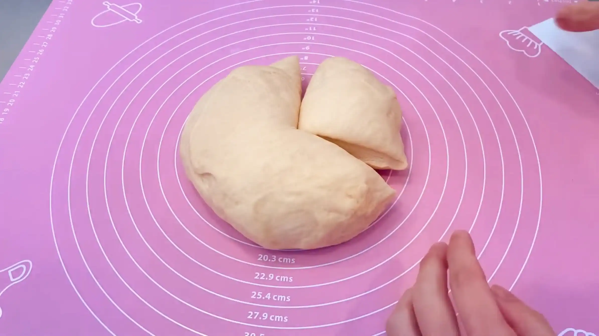
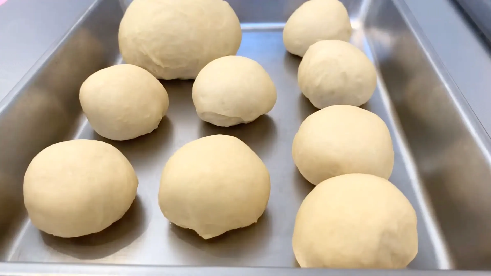
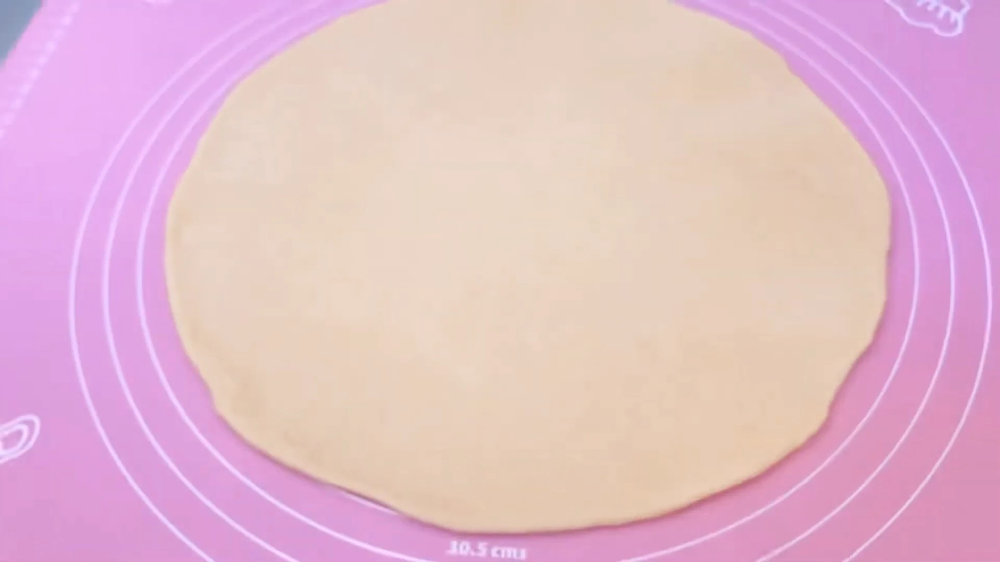
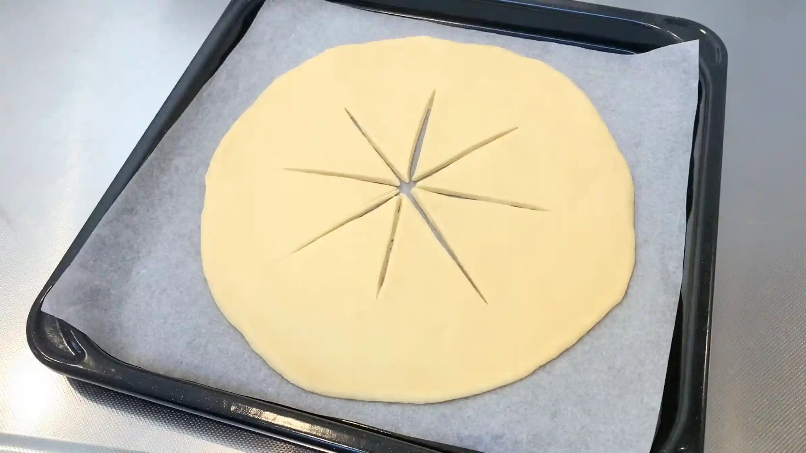
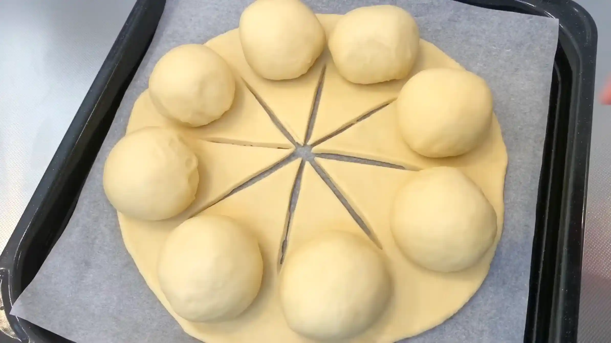
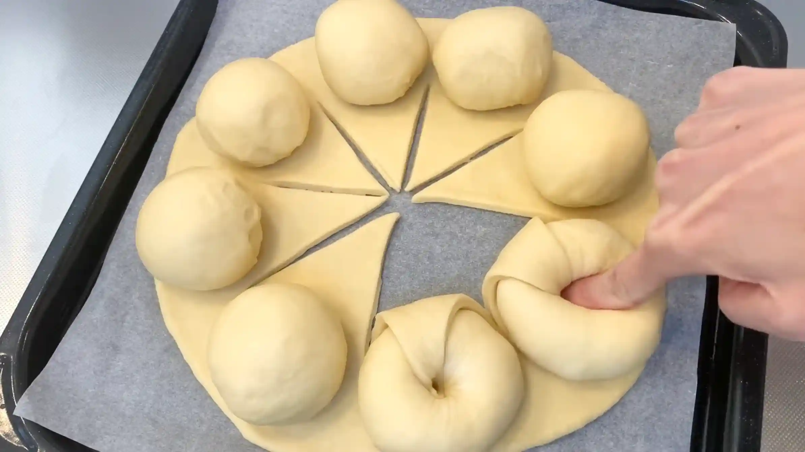
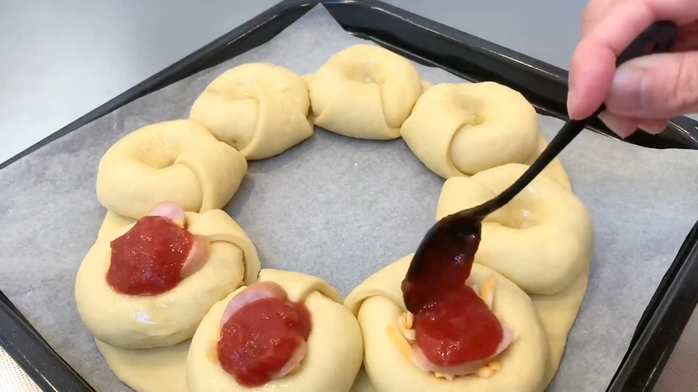
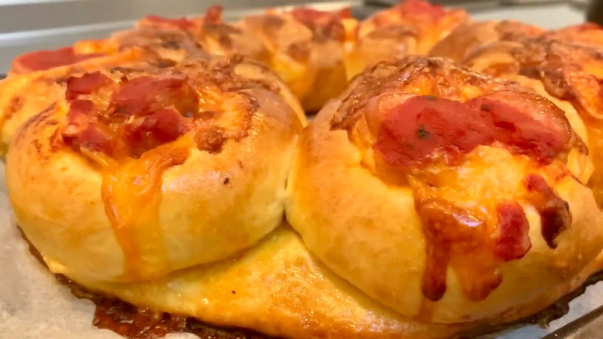

材料
※粉量を変えると自動計算されます
生地
トッピング
作り方
生地
STEP 1
ホームベーカリーで生地を作る
ホームベーカリーに生地作りから一次発酵までお任せします。コースが終わったら次の工程へ進みます。
ホームベーカリーに生地作りから一次発酵までお任せします。コースが終わったら次の工程へ進みます。

STEP 2
生地を取り出し1/3と2/3に分ける
ホームベーカリーから取り出した生地は、ベタつく所を中に入れ込むように丸めると扱いやすくなります。1/3はピザパンの土台に、2/3は具材をのせる丸い部分になります。
ホームベーカリーから取り出した生地は、ベタつく所を中に入れ込むように丸めると扱いやすくなります。1/3はピザパンの土台に、2/3は具材をのせる丸い部分になります。

STEP 3
2/3の生地をさらに8等分して丸め、ラップをして常温で15分おく
分割した生地は、表面がなめらかになるように軽く丸めておきます。ここで生地を休ませることで、次の工程で生地を伸ばしやすくなります。
分割した生地は、表面がなめらかになるように軽く丸めておきます。ここで生地を休ませることで、次の工程で生地を伸ばしやすくなります。

STEP 4
1/3の生地を30㎝の円形に広げる
生地は一度に強く引っ張らず、少しずつ中心から外側へ向かって伸ばします。強力粉の生地は縮みやすいのでつい力が入ってしまいがちですが、厚みや大きさを確認しながらゆっくりのんびり形を整えていきます。
生地は一度に強く引っ張らず、少しずつ中心から外側へ向かって伸ばします。強力粉の生地は縮みやすいのでつい力が入ってしまいがちですが、厚みや大きさを確認しながらゆっくりのんびり形を整えていきます。

STEP 5
生地を天板に移し、中央から8等分に切れ込みを入れる
生地を成形してから天板にのせると、整えた形が崩れてしまうため、オーブンシートの上で成形していきます。切れ込みは端を残すと、焼き上がりが円盤のようになり、可愛く仕上がります。
生地を成形してから天板にのせると、整えた形が崩れてしまうため、オーブンシートの上で成形していきます。切れ込みは端を残すと、焼き上がりが円盤のようになり、可愛く仕上がります。

STEP 6
丸めた生地を、土台の生地にのせる
ここから海外レシピならではの楽しい成形です。丸めた生地のとじ目を下にして、土台の生地にのせていきます。
ここから海外レシピならではの楽しい成形です。丸めた生地のとじ目を下にして、土台の生地にのせていきます。

STEP 7
土台の生地を、丸めた生地に押し込む（[動画 03:45]）
生地に弾力があるため、三角の先を丸めた生地の中央に、しっかりと押し込んでいきます。
生地に弾力があるため、三角の先を丸めた生地の中央に、しっかりと押し込んでいきます。

STEP 8
押し込んだ穴を広げ、具材をトッピングする
具材をトッピングしたら、二次発酵を取らずに焼成に進みます。
具材をトッピングしたら、二次発酵を取らずに焼成に進みます。

STEP 9
牛乳もしくは卵を塗り、予熱なしのオーブン190℃で25分焼く
土台の生地は薄く、上にのせた生地は丸みがあるため、全体にゆっくり火を通すことで生地が固くなるのを防ぎます。あえて予熱しないことで、生地の底が焦げないようにしています。ただ、焼成温度や時間はご家庭によってご調整ください。
土台の生地は薄く、上にのせた生地は丸みがあるため、全体にゆっくり火を通すことで生地が固くなるのを防ぎます。あえて予熱しないことで、生地の底が焦げないようにしています。ただ、焼成温度や時間はご家庭によってご調整ください。

動画でチェック
おいしく作るためのワンポイントコラム
海外の動画でバズっている、生地を中央から折りたたんで作るスタイリッシュなピザパン！『この素敵な成形、味や作りやすさはどうなんだろう？』と気になり、さっそく本場レシピの通りにチャレンジしてみました。日本のパン作りとは少し違う材料や工程に驚きの連続！実際に作ってみて見えてきた「食感の違い」と「作るときのポイント」を、2つの検証結果としてお届けします。
① 食感の違い
レシピでは、生地にオリーブオイルと全卵を入れましたが、ピザ感が出る反面、少し固めの食感に焼き上がりました。ピザと言えばクリスピー、もしくは耳がふわふわ、のどちらかを想像していたので、固めのパンという印象です。ただ、固さがある分成形しやすい生地になっていたため、成形はすごく楽しかったです。材料の水分が全卵と牛乳のみ、油脂もオリーブオイル、ということで、生地に固さが出る要素が多かったのかもしれません。水分にお水を、油脂にバターを加えることで、やわらかさが出そうですね！
② 作るときのポイント
成形をしたあと、焼き上げる前に二次発酵をとらないのも特徴でした。ピザ生地ですと、成形後にすぐ焼くのが一般的かと思います。ただ、今回は丸パンほどの大きさの生地を焼きますので、二次発酵をとる方が生地もしっかりと緩み、焼き上がりがふっくらやわらかく仕上がるなと思いました。
実際に作ってみた感想は「少し固めのピザパン」という仕上がりでしたが、さすがバズりレシピだけあって成形が本当に楽しかったです！海外レシピの再現は、材料や作り方の文化の違いも含めて色々な発見があり、とても面白い体験でした！
① 食感の違い
レシピでは、生地にオリーブオイルと全卵を入れましたが、ピザ感が出る反面、少し固めの食感に焼き上がりました。ピザと言えばクリスピー、もしくは耳がふわふわ、のどちらかを想像していたので、固めのパンという印象です。ただ、固さがある分成形しやすい生地になっていたため、成形はすごく楽しかったです。材料の水分が全卵と牛乳のみ、油脂もオリーブオイル、ということで、生地に固さが出る要素が多かったのかもしれません。水分にお水を、油脂にバターを加えることで、やわらかさが出そうですね！
② 作るときのポイント
成形をしたあと、焼き上げる前に二次発酵をとらないのも特徴でした。ピザ生地ですと、成形後にすぐ焼くのが一般的かと思います。ただ、今回は丸パンほどの大きさの生地を焼きますので、二次発酵をとる方が生地もしっかりと緩み、焼き上がりがふっくらやわらかく仕上がるなと思いました。
実際に作ってみた感想は「少し固めのピザパン」という仕上がりでしたが、さすがバズりレシピだけあって成形が本当に楽しかったです！海外レシピの再現は、材料や作り方の文化の違いも含めて色々な発見があり、とても面白い体験でした！


海外の動画でバズっていた成形で、おしゃれなピザパンを作ってみました。中央から生地を折りたたんで具材を詰める、ワクワクする成形です！海外レシピの分量どおりに作ると、どんな味のパンが焼き上がり、どんな難しさがあるのか。実際に作ってみてわかった、2つの検証結果をまとめました。